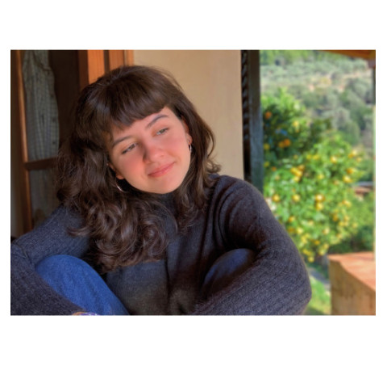
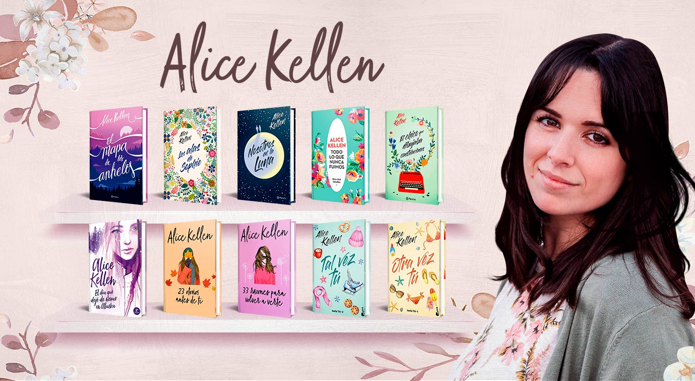
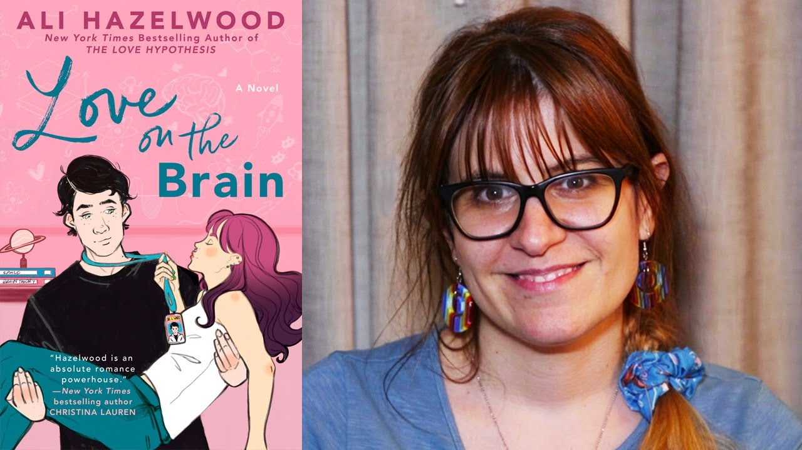

LOS 50 MEJORES LIBROS DE ROMANCE

LAS ESCRITORAS DE LOS LIBROS SELECCIONADOS
Joana Marcús Sastre (Mallorca, España, 30 de junio del 2000) es una escritora de fantasía, ciencia ficción y romance juvenil española. Se inició como escritora en la plataforma digital de lectura y escritura Wattpad a los 13 años donde es la única española en el top mundial.En dos ocasiones ha sido ganadora de los Premios Wattys por sus novelas Irresistible propuesta en 2016 y Ciudades de Humo en 2019. Es una de las autoras más jóvenes en conseguir un éxito de ventas a nivel internacional.En 2021 Antes de diciembre se posicionó entre las 10 novelas más vendidas en diversos países.En el 2022, fue la autora más vendida solo detrás de los libros de Harry Potter. Viajó por diversos países y ciudades para promocionar sus historias.
Alice Kellen (Valencia, 1989) es una escritora española de literatura romántica juvenil y adulta. Comenzó su carrera como escritora en 2013 con Llévame a cualquier lugar y ha seguido publicando hasta la actualidad, contando ya con quince libros en el mercado.

Ariana Godoy (Zulia, Venezuela, 5 de octubre de 1990) es una maestra y escritora venezolana, reside desde 2016 en Raleigh, Carolina del Norte. Comenzó su carrera como escritora en 2009 durante su etapa universitaria, alcanzando cierta popularidad gracias a las publicaciones que ella hacía en la plataforma gratuita de lectura y escritura en línea, Wattpad. Mi amor de Wattpad, publicada en 2011, fue su primer éxito dentro de esta plataforma, haciendo que ganara el premio a la Historia más leída y La Mejor Historia del año en los premios Watty. Es considerada uno de los mayores fenómenos literarios que han salido de esta aplicación.[cita requerida] Actualmente cuenta con más de dos millones de seguidores dentro de la comunidad global de 90 millones de lectores y escritores de dicha plataforma y 1,2 millones de seguidores en Instagram.

Autora venezolana nacida en Caracas el 16 de octubre de 1994. Se graduó en Servicios Turísticos, aunque se dedica en exclusiva a la escritura. Alex Mírez sintió predilección por la lectura desde edad muy temprana gracias a las historias que le contaba su abuelo. Poco a poco este interés se amplió también a la escritura, que comenzó a explorar gracias al descubrimiento de la plataforma Wattpad. Allí empezó a subir sus historias que, inesperadamente, le consiguieron un gran número de lectores. En 2017 vio la luz Asfixia, su primera novela publicada con una editorial tradicional. Tres años después lo haría Perfectos mentirosos, el primero de una bilogía juvenil de misterio.

Jennifer L. Armentrout nació el 11 de junio en Virginia Occidental.Se inspiró para convertirse en escritora después de leer las obras de L.J. Smith, como The Vampire Diaries, The Secret Circle, The Forbidden Games y muchas otras. La serie de libros con la que hizo más conexión fue The Forbidden Games, con el final de esta dejándola en lágrimas. Al terminar de leer la serie, decidió que quería causar el mismo impacto en sus futuros lectores. Su primera experiencia escribiendo una novela fue en la escuela secundaria durante la clase de álgebra. Si bien tenía deseos de ser autora, fue a la universidad y se graduó con una especialización en psicología.

KARINE BERNAL LOBO(1998, Valledupar, Colombia). Se inició como escritora en la plataforma Wattpad durante un paro universitario en 2019, mientras cursaba la carrera de Psicología, como medida para aprovechar el tiempo libre. Su primera obra es la Saga Rey, nacida del amor que siente desde pequeña por las historias de monarquías y los mundos de fantasía que descubrió leyendo los cuentos de los Hermanos Grimm. Gracias a que creó un universo fiel a su imaginación, ha fortalecido una comunidad de lectoras con las que todos los días está agradecida.

Violeta Boyd Castillo nació el 12 de diciembre de 1993. Es una escritora chilena que escribe novelas, cuentos y relatos que hablan de amor, vida, sucesos paranormales y suspenso. Entre sus obras más relevantes se destacan Rompiendo tus reglas y Obedeciendo tus reglas, libros que acumulan más de 67 millones de lecturas y los cuales han sido publicados por Editorial Planeta. Su fascinación por la escritura fue impulsada gracias a un trabajo escolar cuando tenía trece años; desde entonces no dejó de crear historias. Al salir del colegio estudió Diseño Editorial, carrera de la que egresó y que le ha servido para la creación de portadas y multimedia. Fue su mejor amiga quien le comentó sobre la plataforma de lectura Wattpad, donde aprovechó sus ratos libres en el trabajo para escribir y publicar su primera novela bajo el seudónimo de Vhaldai. Actualmente cuenta con más de 90 millones de lecturas en la plataforma y ha trabajado con diferentes plataformas de lectura online, como Sweek y Beek.

MERCEDES RON Nació en la ciudad de Buenos Aires y por su lado paterno cuenta con ascendencia asturiana. Vivió la mitad de su infancia y toda su adolescencia entre España y el Reino Unido, por lo que la joven autora habla tanto el español como el inglés a la perfección. Estudió licenciatura en Comunicación audiovisual en la Universidad de Sevilla.

Elísabet Benavent (Valencia, 1984). La publicación de la Saga Valeria en 2013 la catapultó a la escena literaria y se convirtió en un auténtico fenómeno. Desde entonces ha escrito 21 novelas. Algunas han sido traducidas a varios idiomas y publicadas en diez países.

Eva Muñoz es colombiana, tiene 26 años; sus libros tienen 70 millones de lecturas en la plataforma Wattpad, un grupo de Facebook con 56 mil miembros y consiguió vender en 24 horas 10.500 subscripciones en Booknet de su libro Queen, entre otros récords conseguidos en su corta carrera como escrito

nma Rubiales es una joven autora extremeña que nació en marzo de 2002. Su pasión por la literatura surgió cuando solo era una niña, y, después de pasar años leyendo las historias de otros, decidió que ya era hora de crear las suyas. En 2019, con solo diecisiete años, su primera novela dio el salto al papel tras su éxito en la plataforma Wattpad. Fue en 2022 cuando publicó Hasta que nos quedemos sin estrellas. Su nueva novela se titula El arte de ser nosotros (2023). Actualmente, Inma realiza sus estudios en Publicidad y Relaciones Públicas mientras trabaja en sus apasionantes novelas.

María Martínez es una escritora española de éxito. Autora de la serie new adult «Cruzando los límites» y las novelas Una canción para Novalie, Palabras que nunca te dije, Tú y otros desastres naturales, La fragilidad de un corazón bajo la lluvia y Cuando no queden más estrellas que contar. Historias delicadas, que tratan la complejidad de las emociones, y temas como la familia y la identidad. Le encanta pasar el tiempo entre amigos, libros y música. Últimamente disfruta de su nueva afición por el K-pop y la cultura coreana.

Flor M. Salvador, también conocida como Ekilorhe, es autora de origen mexicano, nacida en 1998. En el año 2017 ingresa en la Universidad Autónoma del Carmen a Estudiar Medicina. Su gusto y su pasión por la literatura le fue inculcando desde muy pequeña, iniciándose en la escritura desde 2014, mostrando una inclinación hacia el género de romance juvenil y drama. En la actualidad se ha convertido en una de las escritoras de mayor éxito de su generación.

Ana Huang es autora de novelas contemporáneas con temática romántica y erótica. Sus historias pueden ser increíblemente optimistas o muy oscuras, pero siempre tienen un final feliz acompañado de chismes y muchos chicos guapos. Además de leer y escribir, Ana adora viajar, está obsesionada con el chocolate caliente y mantiene varias relaciones simultáneas con novios imaginarios.
Ali Hazelwood nació y se crio en Italia. Residió en Japón y Alemania antes de mudarse a los Estados Unidos para doctorarse en neurociencia. Compagina su trabajo de profesora con la escritura. Autora de múltiples publicaciones, la mayoría científicas, y de comedias románticas en las que los personajes principales son mujeres relacionadas con los campos de las matemáticas, la ciencia, la tecnología y la ingeniería